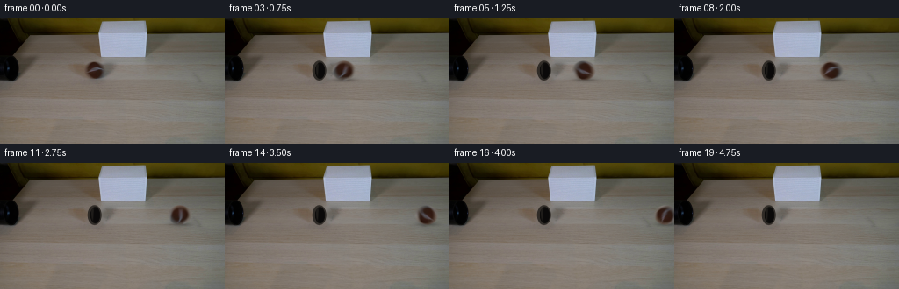
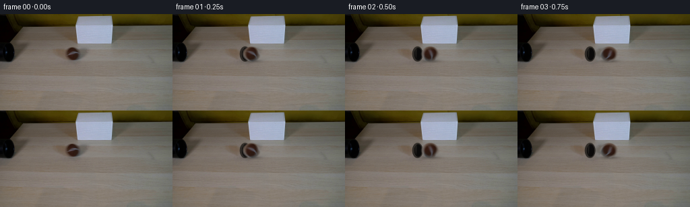

CODING AGENTS AS PIXEL WORLD MODELS
traex/GPT-5.6-Sol · 0149
点击播放 · 原生 RGB 像素
逐轮保存的候选
回放视频、检查图与代码变化。
每份候选均可单独播放。实际图片检查记录在下方工具轨迹中。
候选 01播放与检查图
点击播放 · 原生 RGB 像素


展开代码变化
--- 上一保存版本
+++ 本次保存版本
@@ -0,0 +1,164 @@
+"""Generate the requested locked-off scientific-demonstration shot.
+
+The supplied image is retained as the photographic plate. The one moving
+object is isolated numerically; a clean plate is produced by local inpainting,
+and the ball's measured source texture is rolled across it. Everything is
+deterministic and frame zero is copied without alteration.
+"""
+from pathlib import Path
+
+import cv2
+import numpy as np
+from PIL import Image
+
+import artifact_io
+
+
+HERE = Path(__file__).resolve().parent
+H, W = 144, 256
+N = 20
+
+
+def soft_ellipse(cx, cy, rx, ry, feather=1.0):
+ """Antialiased elliptical coverage in image coordinates."""
+ yy, xx = np.mgrid[0:H, 0:W].astype(np.float32)
+ # Signed approximate distance, in pixels, from the ellipse boundary.
+ q = np.sqrt(((xx - cx) / rx) ** 2 + ((yy - cy) / ry) ** 2)
+ dist = (1.0 - q) * min(rx, ry)
+ return np.clip(dist / feather + 0.5, 0.0, 1.0)
+
+
+def over(dst, color, alpha):
+ """Alpha composite a constant RGB colour onto a float RGB image."""
+ return dst * (1.0 - alpha[..., None]) + np.asarray(color, np.float32) * alpha[..., None]
+
+
+def make_clean_plate(first):
+ """Remove the ball, then reconstruct the tube lip that it hides."""
+ yy, xx = np.mgrid[0:H, 0:W]
+ # The detected ball is centred at (108,59), about 24 px across. A slightly
+ # generous mask also removes its old contact shadow.
+ erase = ((((xx - 108.1) / 14.0) ** 2 + ((yy - 59.1) / 13.2) ** 2) <= 1).astype(np.uint8) * 255
+ plate_bgr = cv2.inpaint(cv2.cvtColor(first, cv2.COLOR_RGB2BGR), erase, 4.0, cv2.INPAINT_TELEA)
+ plate = cv2.cvtColor(plate_bgr, cv2.COLOR_BGR2RGB).astype(np.float32)
+
+ # Right-facing tube mouth: a narrow vertical ellipse due to foreshortening.
+ # Soft dark layers form a rubber rim, an occluded bore, and restrained edge
+ # reflections consistent with the dim source photograph.
+ a = soft_ellipse(107.2, 59.1, 8.0, 11.4, 0.85) * 0.92
+ plate = over(plate, (42, 38, 34), a)
+ a = soft_ellipse(108.0, 59.2, 5.7, 9.4, 0.75) * 0.96
+ plate = over(plate, (12, 11, 10), a)
+ # Very narrow top-left rim reflection and dark right inner falloff.
+ rim = soft_ellipse(105.0, 56.9, 1.35, 7.5, 0.75) * 0.25
+ plate = over(plate, (81, 75, 68), rim)
+ bore = soft_ellipse(109.1, 59.5, 3.7, 8.0, 0.75) * 0.35
+ plate = over(plate, (4, 4, 4), bore)
+ return np.clip(plate, 0, 255)
+
+
+def source_ball_texture(first, clean):
+ """Return the observed ball as a square texture around its measured centre."""
+ # Keep a little exterior padding because affine sampling near the fuzzy edge
+ # benefits from real neighbouring pixels.
+ size = 36
+ tex = np.empty((size, size, 3), np.float32)
+ x0, y0 = 90, 41
+ tex[:] = first[y0:y0 + size, x0:x0 + size]
+
+ # Correct only the outermost portion for background bleed. The interior is
+ # entirely the actual source texture (including its tennis-ball seam/fuzz).
+ yy, xx = np.mgrid[0:size, 0:size].astype(np.float32)
+ lx, ly = xx + x0 - 108.1, yy + y0 - 59.1
+ r = np.sqrt((lx / 12.6) ** 2 + (ly / 11.1) ** 2)
+ edge = np.clip((1.12 - r) / 0.18, 0.0, 1.0)
+ clean_crop = clean[y0:y0 + size, x0:x0 + size]
+ # At the feather, retain the observed RGB to avoid a painted-looking edge;
+ # alpha controls its eventual contribution.
+ tex = tex * edge[..., None] + clean_crop * (1.0 - edge[..., None])
+ return tex, (x0, y0)
+
+
+def add_contact_shadow(frame, cx, speed_blur=0.0):
+ """Multiply in a soft, low contact shadow on the wooden tabletop."""
+ yy, xx = np.mgrid[0:H, 0:W].astype(np.float32)
+ # A tight contact core and a weak broader penumbra. It follows the ball and
+ # is slightly displaced down/right from the overhead illumination.
+ core = np.exp(-0.5 * (((xx - (cx + 0.8)) / (7.1 + speed_blur)) ** 2 + ((yy - 69.6) / 1.35) ** 2))
+ soft = np.exp(-0.5 * (((xx - (cx + 1.5)) / (10.4 + speed_blur)) ** 2 + ((yy - 69.2) / 2.45) ** 2))
+ shade = np.clip(0.22 * core + 0.105 * soft, 0.0, 0.30)
+ return frame * (1.0 - shade[..., None])
+
+
+def render_ball_layer(texture, tex_origin, cx, angle):
+ """Render one sharp rolling-ball sample into premultiplied full-frame RGBA."""
+ x0, y0 = tex_origin
+ tcx, tcy = 108.1 - x0, 59.1 - y0
+
+ # OpenCV maps source to destination. Positive image-space angle is visually
+ # clockwise; a ball travelling right rotates clockwise.
+ M = cv2.getRotationMatrix2D((tcx, tcy), float(np.degrees(angle)), 1.0)
+ M[0, 2] += cx - 108.1 + x0
+ M[1, 2] += y0
+ rgb = cv2.warpAffine(
+ texture, M, (W, H), flags=cv2.INTER_CUBIC,
+ borderMode=cv2.BORDER_CONSTANT, borderValue=(0, 0, 0)
+ )
+
+ yy, xx = np.mgrid[0:H, 0:W].astype(np.float32)
+ # A sphere retains a circular silhouette while its surface texture rotates.
+ # Slight vertical foreshortening matches the measured source footprint.
+ q = np.sqrt(((xx - cx) / 12.55) ** 2 + ((yy - 59.05) / 11.15) ** 2)
+ alpha = np.clip((1.055 - q) / 0.105, 0.0, 1.0)
+
+ # Keep illumination fixed in the room instead of rotating it with texture.
+ # This subtle modulation creates a stable upper-left highlight and contact
+ # darkening while preserving the actual photographed colours.
+ ux = (xx - cx) / 12.55
+ uy = (yy - 59.05) / 11.15
+ light = 1.0 + 0.045 * (-0.55 * ux - 0.83 * uy) - 0.055 * np.clip(uy, 0, 1) ** 2
+ rgb = np.clip(rgb * light[..., None], 0, 255)
+ return rgb * alpha[..., None], alpha
+
+
+def generate():
+ first = np.asarray(Image.open(HERE / "first_frame.png").convert("RGB"), dtype=np.uint8)
+ if first.shape != (H, W, 3):
+ raise ValueError(f"unexpected first-frame shape: {first.shape}")
+
+ clean = make_clean_plate(first)
+ texture, tex_origin = source_ball_texture(first.astype(np.float32), clean)
+ frames = [first.copy()]
+
+ radius = 11.75
+ for i in range(1, N):
+ # Rolling resistance gives a very mild, physically plausible slowdown,
+ # while the ball still traverses the whole visible table in five seconds.
+ displacement = 9.00 * i - 0.025 * i * i
+ cx = 108.1 + displacement
+ frame = clean.copy()
+ frame = add_contact_shadow(frame, cx, speed_blur=0.7)
+
+ # Integrate five exposure-time samples for restrained photographic motion
+ # blur (about 2.4 px total at this speed), not a synthetic trailing smear.
+ premul = np.zeros((H, W, 3), np.float32)
+ asum = np.zeros((H, W), np.float32)
+ for phase in np.linspace(-0.14, 0.14, 5, dtype=np.float32):
+ local_dx = phase * (9.0 - 0.05 * i)
+ sx = cx + local_dx
+ angle = -(displacement + local_dx) / radius
+ pm, a = render_ball_layer(texture, tex_origin, sx, angle)
+ premul += pm / 5.0
+ asum += a / 5.0
+
+ frame = frame * (1.0 - asum[..., None]) + premul
+ frames.append(np.clip(np.rint(frame), 0, 255).astype(np.uint8))
+
+ out = np.stack(frames, axis=0).astype(np.uint8)
+ # Contract-critical invariant: never reconstruct or re-encode frame zero.
+ out[0] = first
+ return out
+
+
+if __name__ == "__main__":
+ artifact_io.save(generate(), HERE)
可观测工具轨迹
实际执行的命令与返回图片。
命令 1exit 0
/bin/bash -lc 'cat GENERATION_RULES.md'
命令 2exit 0
/bin/bash -lc "cat prompt.txt && printf '\\n---FILES---\\n' && find . -maxdepth 2 -type f -printf '%p\\n' | sort"
命令 3exit 0
/bin/bash -lc "python3 - <<'PY'
from PIL import Image
im=Image.open('first_frame.png')
print(im.mode, im.size)
import numpy as np
x=np.array(im)
print(x.shape,x.dtype,x.min(),x.max(),x.mean(axis=(0,1)))
PY"命令 4exit 0
/bin/bash -lc "python3 - <<'PY'
import cv2, numpy as np
from PIL import Image
im=np.array(Image.open('first_frame.png'))
h,w=im.shape[:2]
# dominant kmeans colors and spatial extent/center
z=im.reshape(-1,3).astype(np.float32)
crit=(cv2.TERM_CRITERIA_EPS+cv2.TERM_CRITERIA_MAX_ITER,50,.2)
_,lab,cen=cv2.kmeans(z,10,None,crit,10,cv2.KMEANS_PP_CENTERS)
lab=lab.reshape(h,w)
for i,c in sorted(enumerate(cen), key=lambda t:-(lab==t[0]).sum()):
ys,xs=np.where(lab==i); print(i, 'n',len(xs),'rgb',np.round(c).astype(int),'center',round(xs.mean(),1),round(ys.mean(),1),'bbox',xs.min(),ys.min(),xs.max(),ys.max())
# stats by strips
print('rows')
for y0 in range(0,h,12): print(y0, np.round(im[y0:y0+12].mean((0,1))).astype(int))
print('cols')
for x0 in range(0,w,16): print(x0,np.round(im[:,x0:x0+16].mean((0,1))).astype(int))
# hsv masks components candidates
hsv=cv2.cvtColor(im,cv2.COLOR_RGB2HSV)
for name,m in [
('dark',np.max(im,2)<45),('blackish',np.max(im,2)<70),('white',(im.mean(2)>155)&(np.max(im,2)-np.min(im,2)<35)),
('brown',(im[:,:,0]>im[:,:,1]*1.15)&(im[:,:,1]>im[:,:,2]*1.1)&(im[:,:,0]>50)),
('saturated',hsv[:,:,1]>100),('bright',hsv[:,:,2]>170)]:
n,la,st,ce=cv2.connectedComponentsWithStats(m.astype('uint8'),8)
print('\\n',name,'total',m.sum())
for j in np.argsort(st[1:,cv2.CC_STAT_AREA])[::-1][:10]+1:
x,y,ww,hh,a=st[j]; print(a,(x,y,ww,hh),np.round(ce[j],1))
# strongest edge contours
ed=cv2.Canny(im,60,140)
cs,_=cv2.findContours(ed,cv2.RETR_LIST,cv2.CHAIN_APPROX_SIMPLE)
print('\\ncontours')
for c in sorted(cs,key=cv2.contourArea,reverse=True)[:20]:
print(round(cv2.contourArea(c),1),cv2.boundingRect(c))
PY"命令 5exit 0
/bin/bash -lc "python3 - <<'PY'
from PIL import Image
import numpy as np
im=np.array(Image.open('first_frame.png'))
# Print categorized map exact-ish at 2x2 pixels
for y0,y1,x0,x1,step in [(0,80,0,130,2),(0,60,90,190,2),(40,85,70,150,1)]:
print('\\nREGION',x0,x1,y0,y1,'step',step)
for y in range(y0,y1,step):
s=''
for x in range(x0,x1,step):
p=im[y:min(y+step,y1),x:min(x+step,x1)].mean((0,1)); r,g,b=p
mx=max(p); mn=min(p)
if mx<30: c='#'
elif mx<55:c='K'
elif mx<80:c='d'
elif r>g*1.3 and g>b*1.4:c='b' # brown
elif r>g*1.12 and g>b*1.08:c='o'
elif mx<105:c=':'
elif mx<135:c='.'
elif mx<165:c='+'
elif mx<195:c='w'
else:c='W'
s+=c
print(f'{y:03d} {s}')
PY"命令 6exit 0
/bin/bash -lc "python3 - <<'PY'
from PIL import Image
import numpy as np
im=np.array(Image.open('first_frame.png'))
pts=[(x,y) for y in [0,5,10,15,20,30,40,45,48,50,52,54,56,58,60,62,64,66,68,70,72,80,100,130] for x in [0,10,20,30,40,50,60,70,80,90,95,100,105,110,115,120,130,140,150,160,170,180,200,220,240,255]]
for y in [0,5,10,15,20,30,40,45,48,50,52,54,56,58,60,62,64,66,68,70,72,80,100,130]:
print('\\ny',y)
print(' '.join(f'{x}:{tuple(im[y,x])}' for x in [0,10,20,30,40,50,60,70,80,90,95,100,105,110,115,120,130,140,150,160,170,180,200,220,240,255]))
PY"命令 7exit 0
/bin/bash -lc "python3 - <<'PY'
from PIL import Image
import numpy as np
im=np.array(Image.open('first_frame.png'))
chars=' .:-=+*#%@'
for y in range(46,73):
s=''
for x in range(94,123):
r,g,b=map(int,im[y,x]); lum=(r+g+b)/3
if r>g+10 and g>b+6 and r>60: c='B' if lum>75 else 'b'
elif max(r,g,b)<55:c='K'
elif b>r+8:c='c'
else:c=chars[min(9,int(lum/18))]
s+=c
print(f'{y:2}',s)
print('\\nRGB core every pixel')
for y in range(48,71):
print('y',y, ['%02x%02x%02x'%tuple(im[y,x]) for x in range(97,120)])
PY"命令 8exit 0
/bin/bash -lc 'cat artifact_io.py'
命令 9exit 0
/bin/bash -lc "python3 - <<'PY'
import cv2, numpy as np
from PIL import Image
im=np.array(Image.open('first_frame.png'))
h,w=im.shape[:2]; yy,xx=np.mgrid[:h,:w]
for r in [11.5,12.5,13.5]:
m=(((xx-108.0)/1.05)**2+((yy-59.0))**2<r*r).astype(np.uint8)*255
for meth,n in [(cv2.INPAINT_TELEA,'T'),(cv2.INPAINT_NS,'N')]:
b=cv2.inpaint(cv2.cvtColor(im,cv2.COLOR_RGB2BGR),m,5,meth)
a=cv2.cvtColor(b,cv2.COLOR_BGR2RGB)
print('r',r,n,'center',a[59,108], 'row59', [tuple(a[59,x]) for x in range(96,122,3)], 'col108',[tuple(a[y,108]) for y in range(47,72,3)])
PY"命令 10exit 0
/bin/bash -lc "python3 - <<'PY'
import cv2,numpy as np
from PIL import Image
im=np.array(Image.open('first_frame.png')); h,w=im.shape[:2]; yy,xx=np.mgrid[:h,:w]
mask=((((xx-108)/1.02)**2+(yy-59)**2)<14**2).astype('uint8')*255
b=cv2.cvtColor(cv2.inpaint(cv2.cvtColor(im,cv2.COLOR_RGB2BGR),mask,4,cv2.INPAINT_TELEA),cv2.COLOR_BGR2RGB)
d=np.sqrt(((im.astype(float)-b)**2).sum(2))
for y in range(44,74):
print(f'{y:02d}', ''.join(' ' if d[y,x]<5 else '.' if d[y,x]<15 else ':' if d[y,x]<30 else '*' if d[y,x]<60 else '#' for x in range(90,130)))
# weighted COM bbox threshold
for th in [10,20,30,50,80]:
m=(d>th)&(xx>90)&(xx<130)&(yy>42)&(yy<76)
ys,xs=np.where(m); print(th,len(xs),(xs.min(),ys.min(),xs.max(),ys.max()),(xs.mean(),ys.mean()))
PY"命令 11exit 0
/bin/bash -lc "cat > generate.py <<'PY'
\"\"\"Generate the requested locked-off scientific-demonstration shot.
The supplied image is retained as the photographic plate. The one moving
object is isolated numerically; a clean plate is produced by local inpainting,
and the ball's measured source texture is rolled across it. Everything is
deterministic and frame zero is copied without alteration.
\"\"\"
from pathlib import Path
import cv2
import numpy as np
from PIL import Image
import artifact_io
HERE = Path(__file__).resolve().parent
H, W = 144, 256
N = 20
def soft_ellipse(cx, cy, rx, ry, feather=1.0):
\"\"\"Antialiased elliptical coverage in image coordinates.\"\"\"
yy, xx = np.mgrid[0:H, 0:W].astype(np.float32)
# Signed approximate distance, in pixels, from the ellipse boundary.
q = np.sqrt(((xx - cx) / rx) ** 2 + ((yy - cy) / ry) ** 2)
dist = (1.0 - q) * min(rx, ry)
return np.clip(dist / feather + 0.5, 0.0, 1.0)
def over(dst, color, alpha):
\"\"\"Alpha composite a constant RGB colour onto a float RGB image.\"\"\"
return dst * (1.0 - alpha[..., None]) + np.asarray(color, np.float32) * alpha[..., None]
def make_clean_plate(first):
\"\"\"Remove the ball, then reconstruct the tube lip that it hides.\"\"\"
yy, xx = np.mgrid[0:H, 0:W]
# The detected ball is centred at (108,59), about 24 px across. A slightly
# generous mask also removes its old contact shadow.
erase = ((((xx - 108.1) / 14.0) ** 2 + ((yy - 59.1) / 13.2) ** 2) <= 1).astype(np.uint8) * 255
plate_bgr = cv2.inpaint(cv2.cvtColor(first, cv2.COLOR_RGB2BGR), erase, 4.0, cv2.INPAINT_TELEA)
plate = cv2.cvtColor(plate_bgr, cv2.COLOR_BGR2RGB).astype(np.float32)
# Right-facing tube mouth: a narrow vertical ellipse due to foreshortening.
# Soft dark layers form a rubber rim, an occluded bore, and restrained edge
# reflections consistent with the dim source photograph.
a = soft_ellipse(107.2, 59.1, 8.0, 11.4, 0.85) * 0.92
plate = over(plate, (42, 38, 34), a)
a = soft_ellipse(108.0, 59.2, 5.7, 9.4, 0.75) * 0.96
plate = over(plate, (12, 11, 10), a)
# Very narrow top-left rim reflection and dark right inner falloff.
rim = soft_ellipse(105.0, 56.9, 1.35, 7.5, 0.75) * 0.25
plate = over(plate, (81, 75, 68), rim)
bore = soft_ellipse(109.1, 59.5, 3.7, 8.0, 0.75) * 0.35
plate = over(plate, (4, 4, 4), bore)
return np.clip(plate, 0, 255)
def source_ball_texture(first, clean):
\"\"\"Return the observed ball as a square texture around its measured centre.\"\"\"
# Keep a little exterior padding because affine sampling near the fuzzy edge
# benefits from real neighbouring pixels.
size = 36
tex = np.empty((size, size, 3), np.float32)
x0, y0 = 90, 41
tex[:] = first[y0:y0 + size, x0:x0 + size]
# Correct only the outermost portion for background bleed. The interior is
# entirely the actual source texture (including its tennis-ball seam/fuzz).
yy, xx = np.mgrid[0:size, 0:size].astype(np.float32)
lx, ly = xx + x0 - 108.1, yy + y0 - 59.1
r = np.sqrt((lx / 12.6) ** 2 + (ly / 11.1) ** 2)
edge = np.clip((1.12 - r) / 0.18, 0.0, 1.0)
clean_crop = clean[y0:y0 + size, x0:x0 + size]
# At the feather, retain the observed RGB to avoid a painted-looking edge;
# alpha controls its eventual contribution.
tex = tex * edge[..., None] + clean_crop * (1.0 - edge[..., None])
return tex, (x0, y0)
def add_contact_shadow(frame, cx, speed_blur=0.0):
\"\"\"Multiply in a soft, low contact shadow on the wooden tabletop.\"\"\"
yy, xx = np.mgrid[0:H, 0:W].astype(np.float32)
# A tight contact core and a weak broader penumbra. It follows the ball and
# is slightly displaced down/right from the overhead illumination.
core = np.exp(-0.5 * (((xx - (cx + 0.8)) / (7.1 + speed_blur)) ** 2 + ((yy - 69.6) / 1.35) ** 2))
soft = np.exp(-0.5 * (((xx - (cx + 1.5)) / (10.4 + speed_blur)) ** 2 + ((yy - 69.2) / 2.45) ** 2))
shade = np.clip(0.22 * core + 0.105 * soft, 0.0, 0.30)
return frame * (1.0 - shade[..., None])
def render_ball_layer(texture, tex_origin, cx, angle):
\"\"\"Render one sharp rolling-ball sample into premultiplied full-frame RGBA.\"\"\"
x0, y0 = tex_origin
tcx, tcy = 108.1 - x0, 59.1 - y0
# OpenCV maps source to destination. Positive image-space angle is visually
# clockwise; a ball travelling right rotates clockwise.
M = cv2.getRotationMatrix2D((tcx, tcy), float(np.degrees(angle)), 1.0)
M[0, 2] += cx - 108.1 + x0
M[1, 2] += y0
rgb = cv2.warpAffine(
texture, M, (W, H), flags=cv2.INTER_CUBIC,
borderMode=cv2.BORDER_CONSTANT, borderValue=(0, 0, 0)
)
yy, xx = np.mgrid[0:H, 0:W].astype(np.float32)
# A sphere retains a circular silhouette while its surface texture rotates.
# Slight vertical foreshortening matches the measured source footprint.
q = np.sqrt(((xx - cx) / 12.55) ** 2 + ((yy - 59.05) / 11.15) ** 2)
alpha = np.clip((1.055 - q) / 0.105, 0.0, 1.0)
# Keep illumination fixed in the room instead of rotating it with texture.
# This subtle modulation creates a stable upper-left highlight and contact
# darkening while preserving the actual photographed colours.
ux = (xx - cx) / 12.55
uy = (yy - 59.05) / 11.15
light = 1.0 + 0.045 * (-0.55 * ux - 0.83 * uy) - 0.055 * np.clip(uy, 0, 1) ** 2
rgb = np.clip(rgb * light[..., None], 0, 255)
return rgb * alpha[..., None], alpha
def generate():
first = np.asarray(Image.open(HERE / \"first_frame.png\").convert(\"RGB\"), dtype=np.uint8)
if first.shape "'!= (H, W, 3):
raise ValueError(f"unexpected first-frame shape: {first.shape}")
clean = make_clean_plate(first)
texture, tex_origin = source_ball_texture(first.astype(np.float32), clean)
frames = [first.copy()]
radius = 11.75
for i in range(1, N):
# Rolling resistance gives a very mild, physically plausible slowdown,
# while the ball still traverses the whole visible table in five seconds.
displacement = 9.00 * i - 0.025 * i * i
cx = 108.1 + displacement
frame = clean.copy()
frame = add_contact_shadow(frame, cx, speed_blur=0.7)
# Integrate five exposure-time samples for restrained photographic motion
# blur (about 2.4 px total at this speed), not a synthetic trailing smear.
premul = np.zeros((H, W, 3), np.float32)
asum = np.zeros((H, W), np.float32)
for phase in np.linspace(-0.14, 0.14, 5, dtype=np.float32):
local_dx = phase * (9.0 - 0.05 * i)
sx = cx + local_dx
angle = -(displacement + local_dx) / radius
pm, a = render_ball_layer(texture, tex_origin, sx, angle)
premul += pm / 5.0
asum += a / 5.0
frame = frame * (1.0 - asum[..., None]) + premul
frames.append(np.clip(np.rint(frame), 0, 255).astype(np.uint8))
out = np.stack(frames, axis=0).astype(np.uint8)
# Contract-critical invariant: never reconstruct or re-encode frame zero.
out[0] = first
return out
if __name__ == "__main__":
artifact_io.save(generate(), HERE)
PY
python3 generate.py
python3 - <<'"'PY'
import numpy as np
from PIL import Image
x=np.load('pixels.npz')['pixels']
print('packed',x.shape,x.dtype)
frames=[]
for i in range(x.shape[2]):
p=x[:,:,i]; frames.append(np.stack([(p>>16)&255,(p>>8)&255,p&255],2).astype('uint8'))
frames=np.stack(frames)
f=np.array(Image.open('first_frame.png'))
print('frames',frames.shape,frames.dtype,'frame0 exact',np.array_equal(frames[0],f))
for i in range(20):
d=np.abs(frames[i].astype(int)-f.astype(int))
ys,xs=np.where(np.max(d,2)>8)
print(i, 'changed',len(xs), 'bbox', None if not len(xs) else (xs.min(),ys.min(),xs.max(),ys.max()), 'mean',frames[i].mean(axis=(0,1)).round(2))
PY"保存候选 1 份；完成命令 11 次；可验证图片返回 0 张。原始 API 响应与完整日志保留在本地。